Walk outward from the Sun
Three short decks, in order: the Sun and its planets, twenty-two moons at true scale, and Jupiter as volunteers develop it from a spacecraft's raw frames.
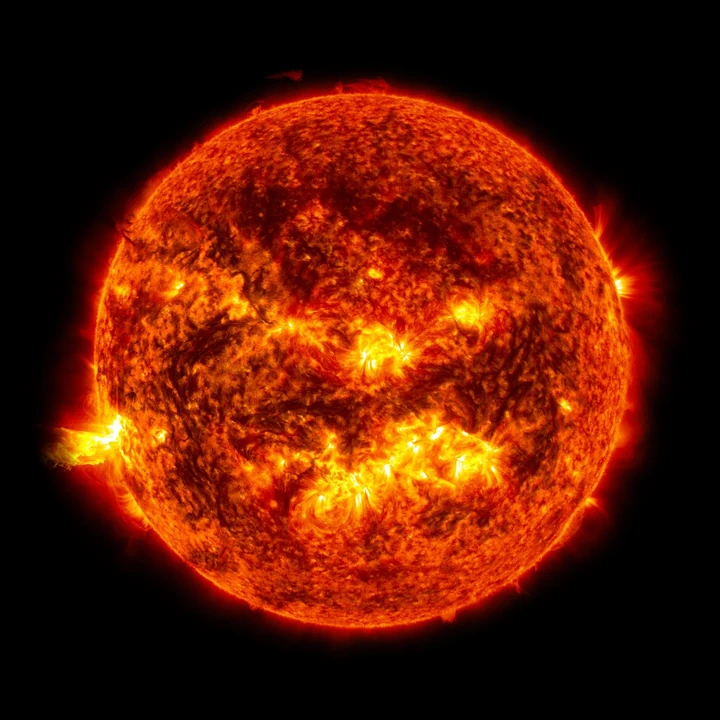
The star The Sun Radius 695,700 km109 Earths across Open its slide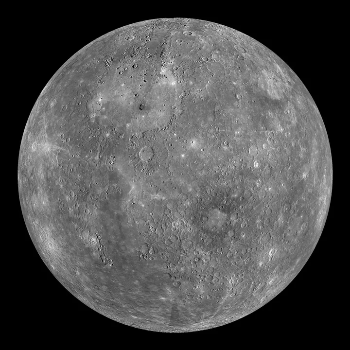
First planet from the Sun Mercury Radius 2,439.7 km38% of Earth's width Open its slide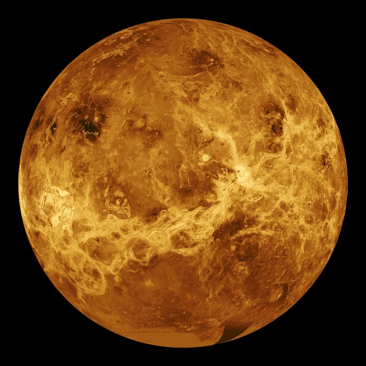
Second planet from the Sun Venus Radius 6,051.8 km95% of Earth's width Open its slide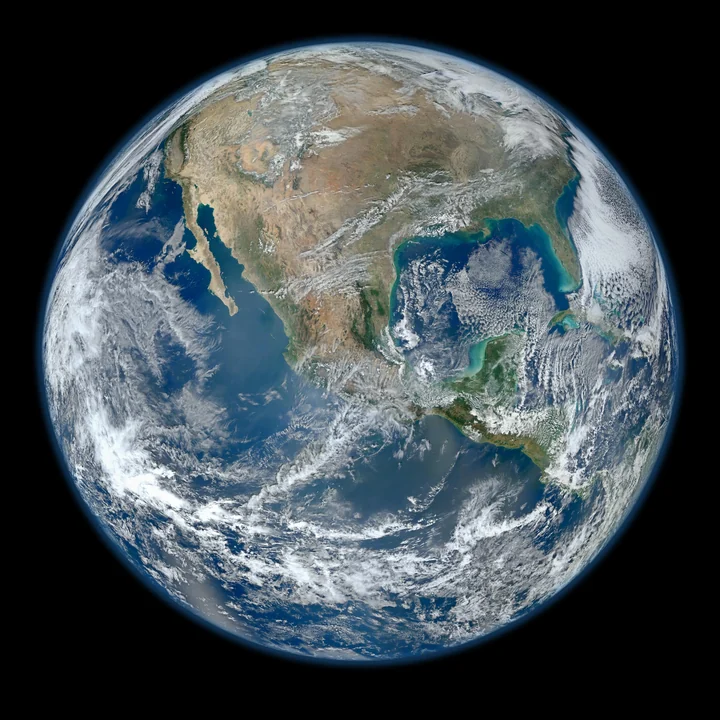
Third planet from the Sun Earth Radius 6,378.1 kmthe yardstick Open its slide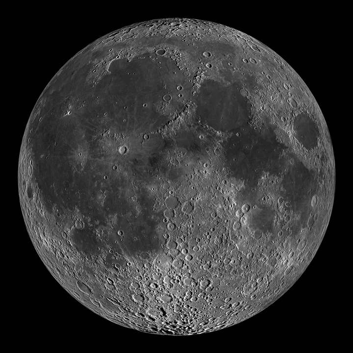
Earth's satellite The Moon Radius 1,737.4 km27% of Earth's width Open its slide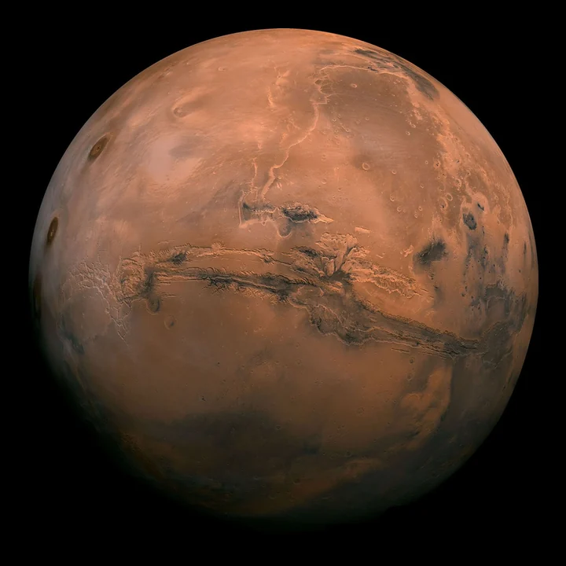
Fourth planet from the Sun Mars Radius 3,396.2 km53% of Earth's width Open its slide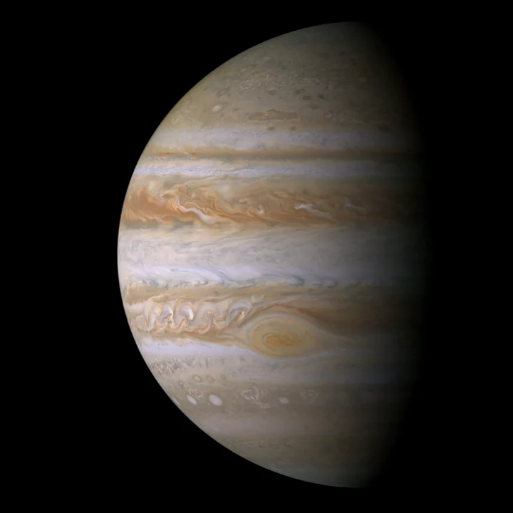
Fifth planet from the Sun Jupiter Radius 71,492 km11.2 Earths across Open its slide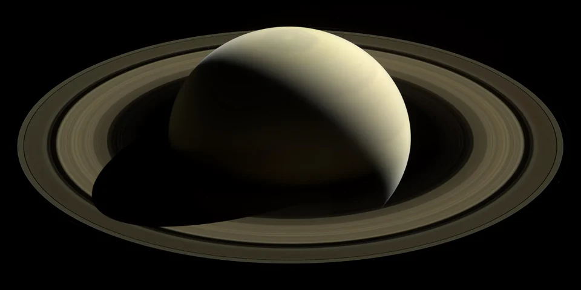
Sixth planet from the Sun Saturn Radius 60,268 km9.4 Earths across Open its slide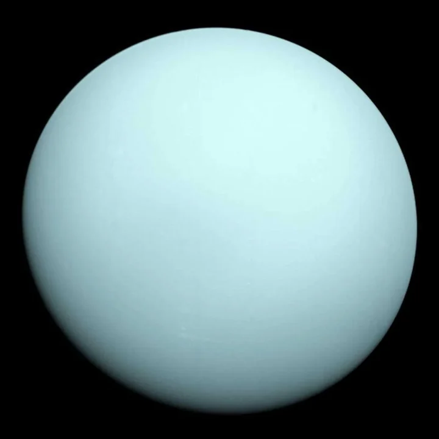
Seventh planet from the Sun Uranus Radius 25,559 km4.0 Earths across Open its slide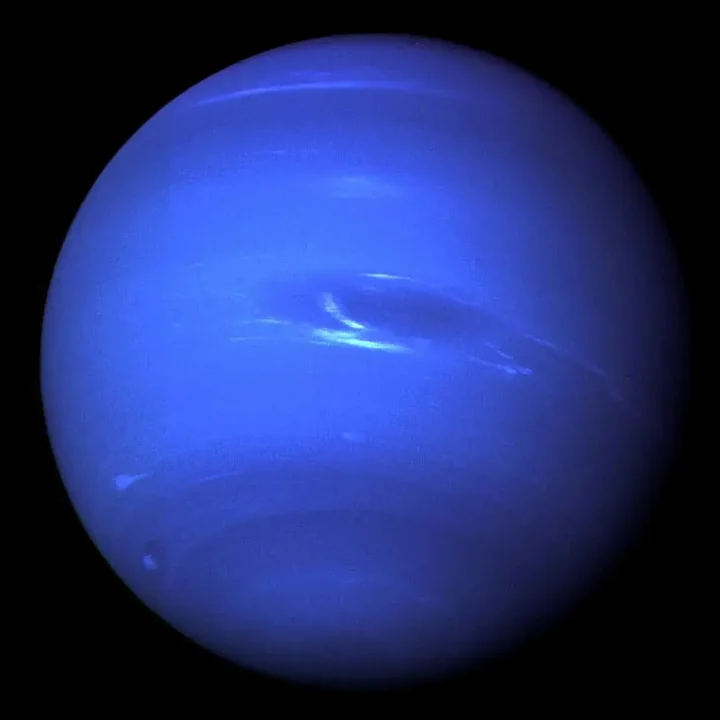
Eighth planet from the Sun Neptune Radius 24,764 km3.9 Earths across Open its slideSwipe to travel outward
Three decks, one way through
Each deck ends by handing you to the next, so you can start at the top and keep going. Swipe or use the arrow keys inside a deck.
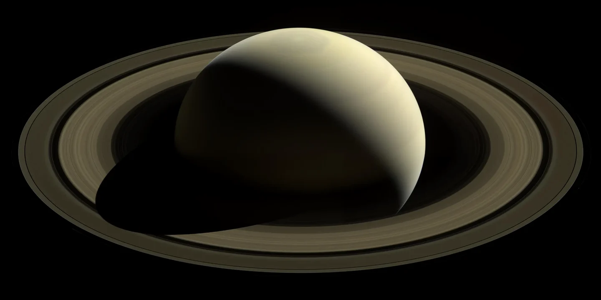
The Sun and its planets
Start at the Sun and go out to Neptune. Each world gets one photograph filling the screen and the few numbers that define it: its size, its mass, its gravity, the length of its day, its tilt, its temperature and its air.
Open the deck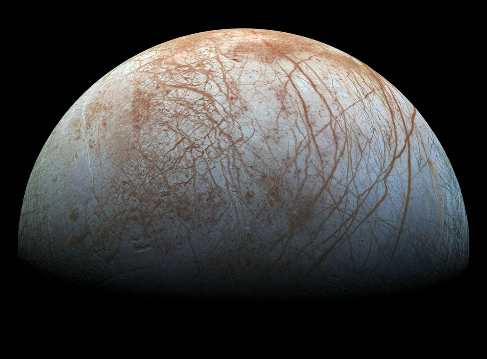
Twenty-two moons
Then the moons, set beside each other at true scale. Two small rocks at Mars, Jupiter's four, Saturn's ice worlds and Titan under its haze, and on out to Triton, which runs backwards round Neptune.
Open the deck
Jupiter, developed by volunteers
Last, one planet up close. JunoCam sends home raw strips, and members of the public turn them into pictures. This deck shows how the camera works, and why no two pictures of Jupiter agree.
Open the deckEvery frame, up close
Thirty of the pictures volunteers have made from JunoCam's raw frames, each shown from its processor's full-size original and credited by name. Filter them, open one, and zoom in.
Open the explorer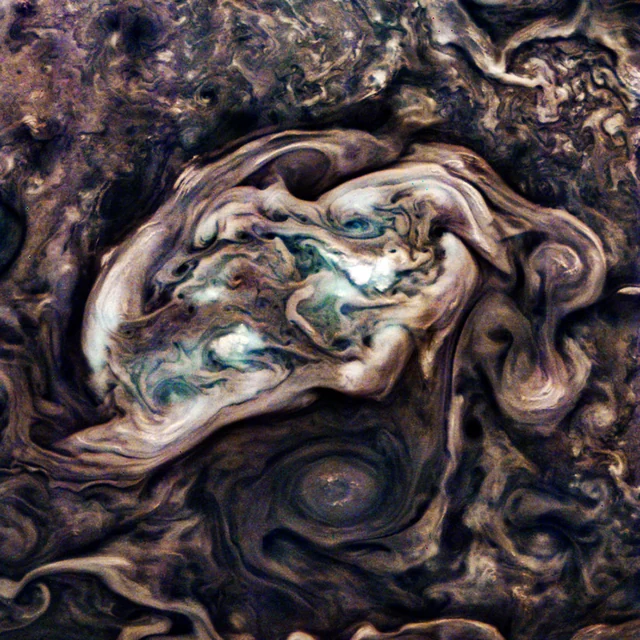
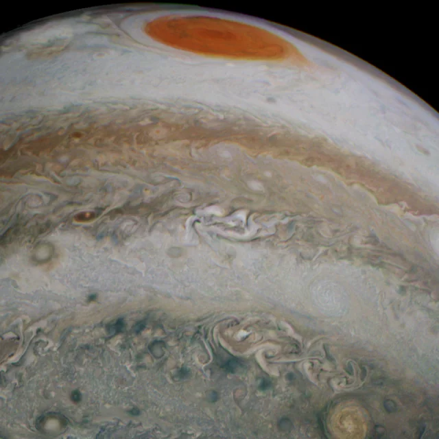
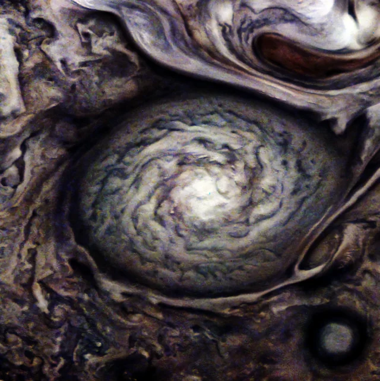
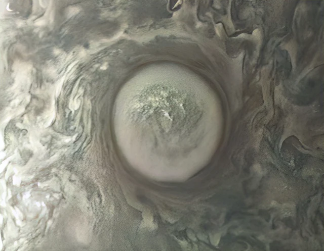
Then see it move
Every figure in these decks is read from the tables behind Sol, a live orrery of the same bodies. When you have seen them still, watch them in motion.
Continue to Sol